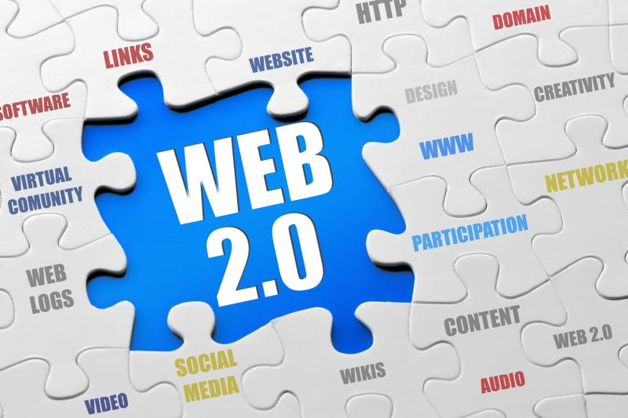

DEFINITION
Web 2.0 refers to the second generation of the World Wide Web, emerging around 2004. It shifted the Web from a read-only medium to a read-write platform where users could create, share, and interact with content through social networks, blogs, wikis, and online applications.
How It Works
Web 2.0 introduced platforms like Facebook, YouTube, Wikipedia, and Twitter where ordinary users became content creators. AJAX technology enabled dynamic page updates without full page reloads, making web applications feel fast and responsive like desktop software.
Technologies like JavaScript frameworks, REST APIs, RSS feeds, and cloud computing power the Web 2.0 experience. Users sign up, log in, post content, leave comments, share media, and interact with each other in real time across the globe.
Era
Approximately 2004 to present — the current dominant form of the Web.
Nature
Interactive and read-write — users both consume and create content.
Key Technologies
AJAX, REST APIs, JavaScript frameworks, and cloud hosting platforms.
Examples
YouTube, Facebook, Wikipedia, Twitter, Instagram, and Google Docs.